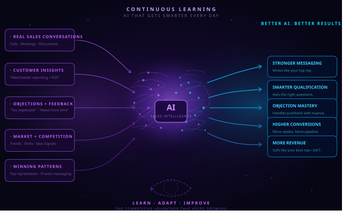

Eliminate Outbound Sales Friction. Build Systems That Scale.
We are Sales Operations Engineers. We bridge the gap between your lead generation tools and your CRM. We fix the data gaps that kill pipeline velocity and calibrate your sales process so your team spends their time closing—not fighting with software.

How We Repair Outbound Sales Channels
When an outbound sales floor scales, "out-of-the-box" software often fails. We look under the hood to ensure your tech stack is helping your team—not holding them back.
- • System Infrastructure Audits: We ensure your data flows smoothly from prospect list to CRM, so no lead is ever lost.
- • Communication Refinement: We tune your outreach modules to sound human, natural, and relevant.
- • Frontline Process Calibration: We align your team's daily workflow with the winning habits of top performers.
- • Automated Pipeline Plumbing: We build custom, clean integrations that eliminate manual data entry.
- • Operational Maintenance: We proactively tweak your systems to protect your revenue and domain health.
Balancing Technology & Human Capital
Sustainable growth requires a perfect connection between your automated systems and your human team.
- 1. Data Integrity — We track down missing records and resolve syncing errors.
- 2. Automation Architecture — We build reliable bridges between your tools (like HubSpot, Close, and Instantly).
- 3. Messaging Intelligence — We train your tools to process nuances, avoiding generic, spammy outreach.
- 4. Diagnostic Audits — We analyze live sales data to find exactly where your pipeline is stalling.
- 5. Execution Alignment — We structure scripts and training based on what *actually* works in your market.
- 6. Legacy Onboarding — We transition your manual offline workflows into automated engines without massive rewrites.
Integration & Workflow Tuning
Whether you need a structural repair of existing data or a new, low-code backend, we optimize your sales loop.
- • We audit your deliverability and webhook pathways to ensure your systems perform reliably.
- • We remove technical friction that slows down your outreach speed.
- • We reprogram your communication layers to maintain data integrity and professional standards.
- • We design interfaces that remove repetitive admin tasks.
- • We connect your daily actions directly into clear reporting dashboards.
- • We insulate your team from technical distractions so they can focus on revenue.

Who We Engineer Solutions For
We partner with scaling firms and agencies that have outgrown simple setups and need professional-grade operations:
- • You have 10 to 50 employees and are starting to experience data drops or sync errors.
- • You lose opportunities because critical information doesn't reach your reps in time.
- • You rely on a mix of automated tools and human execution and need them to work in sync.
- • You want clear, scalable architectures that protect your growth and maximize cash flow.
The Mechanics Behind the Engine
An elite team of architects, engineers, and sales strategists dedicated to removing friction.
Floyd
CEO & Sales Architect
Khalid
Co-Founder & Tech Lead
Adam
Senior Consultant
Abdullah
Designer & UX
Ready to Audit Your Pipeline?
Let’s hop on a 30‑minute infrastructure call. We’ll review your current tech stack, pinpoint where you are losing data or time, and map out a path to a more efficient operation.
Book Your Audit